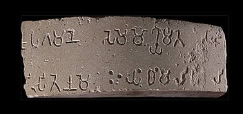

Ashoka converts to BuddhismIn 261 B.C. an important Mauryan emperor named Ashoka converted to Buddhism. He had been a warrior king who was involved in many battles.However, he became remorseful and vowed to change his behaviour after an especially brutal battle. From about 261 B.C. he became a devoted Buddhist. Between about 243 B.C. and 242 B.C., Ashoka had pillars inscribed with edicts put up all over his empire. These edicts cover topics such as religion, law, religious tolerance and the protection of animals.Only ten pillars still exist today, but originally there were over 30 Ashoka pillar edicts. On average, the pillars were 40-50 feet high and weighed up to around 50 tons each. 
This is a fragment of an Ashokan pillar written in Prakrit language using the Brahmi script. |